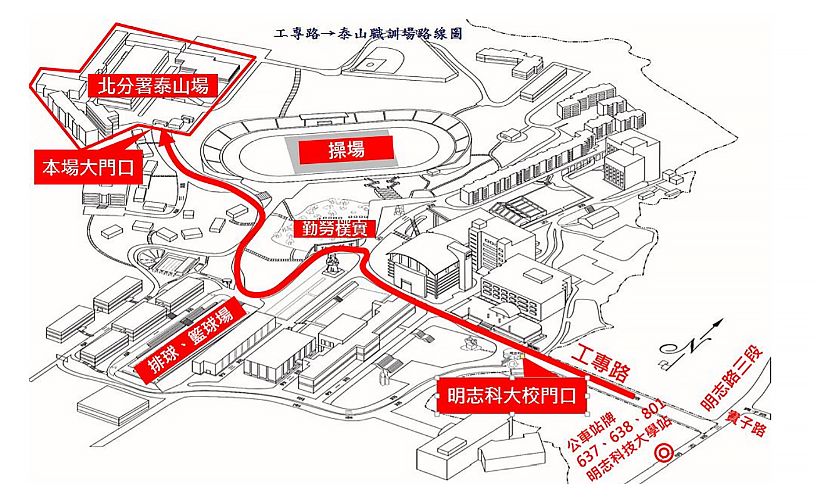
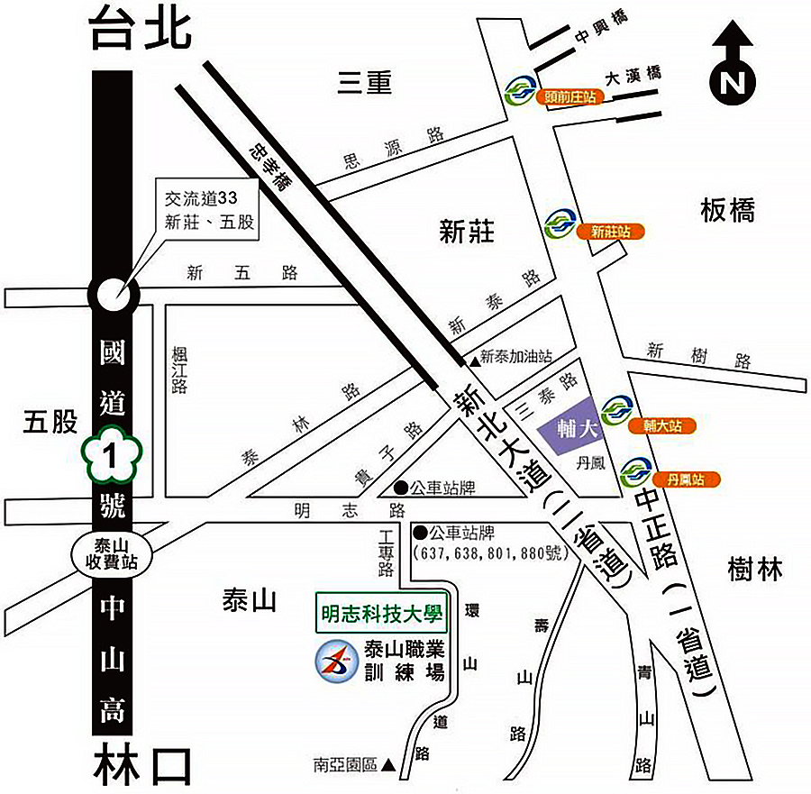

泰山職訓-交通方式
位於明志科技大學校內，座落在環境優美的半山腰上，週邊交通便利，場內附設有停車場
交通描述： 位置圖
交通描述一： 公車、捷運
1.公車：三重客運(637、638)、指南客運(797、798、801、858、880、883、1501、1503)，至明志科技大學站下車。
2.新北市泰山區免費公車(泰山區F216明志國小-台北車站(北三門搭車))：至貴子路下車後，步行至貴子路口左轉明志路3段，明志路直行約100公尺至工專路右轉，再直行即可至明志科技大學。
3.捷運：臺北捷運中和新蘆線至丹鳳站1號出口或桃園捷運機場線至泰山貴和站（明志科大）1號出口，再轉乘公車或騎乘YouBike微笑單車（約10~15分鐘）至明志科技大學。
交通描述二：自行開車
1.高速公路五股交流道下(往新莊、泰山)，經新五路至新北大道右轉，直行至貴子路口右轉，貴子路直行至明志路左轉。於明志路繼續前行約100公尺右轉工專路，即可抵達明科技大學。
2.由台北車站走忠孝橋，直行高架道路，下到平面道路之後直行至貴子路口右轉，貴子路直行至明志路左轉，於明志路繼續前行約100公尺右轉工專路，即可抵達明科技大學。
3.明志科大「汽車」停車費30元/小時，請儘量搭乘大眾交通工具或機車(免停車費)。
